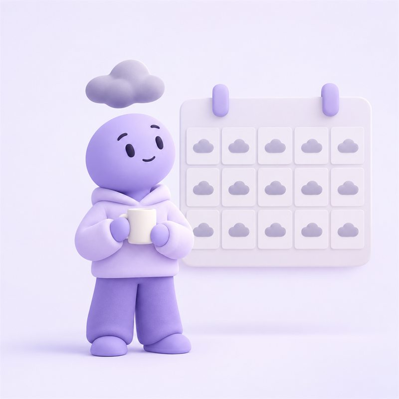
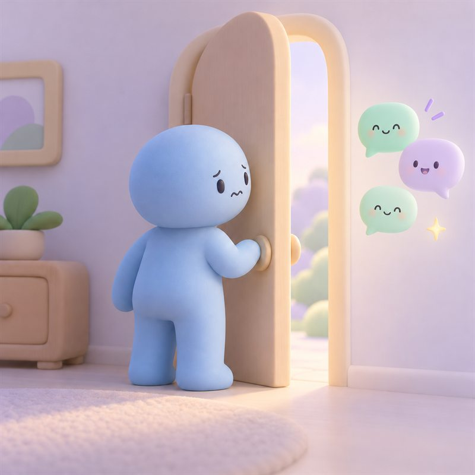
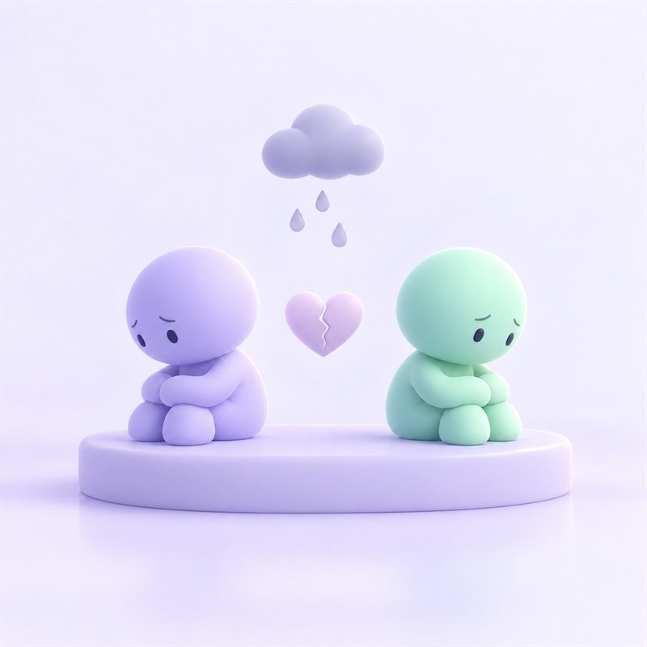
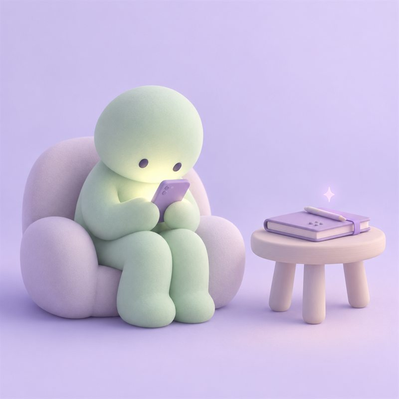

Interviews
Key Insights
-

01Anxiety is constant, so people treat it as normal
-

02People crave connection, then pull away from it
-

03Stress slowly wears relationships down
-

04People need reflection, but rarely make time for it